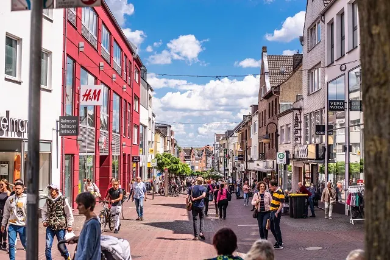
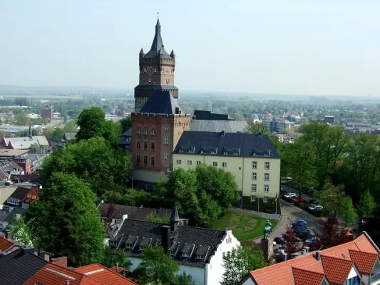
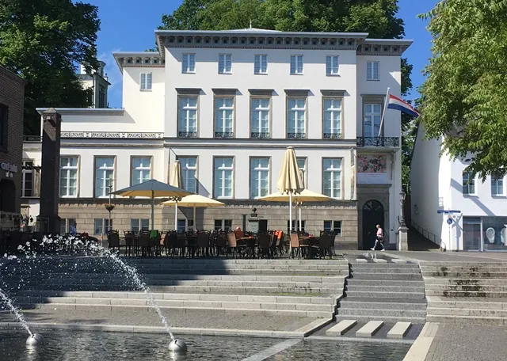
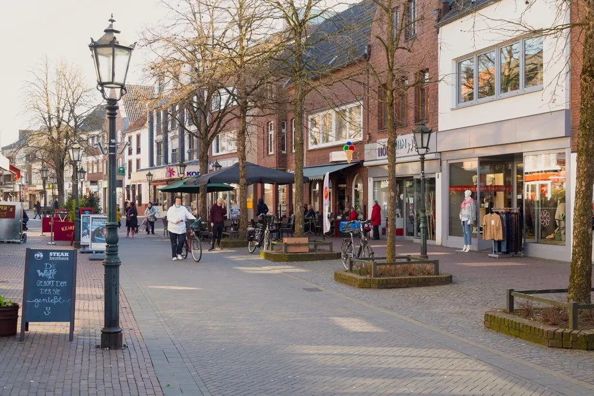
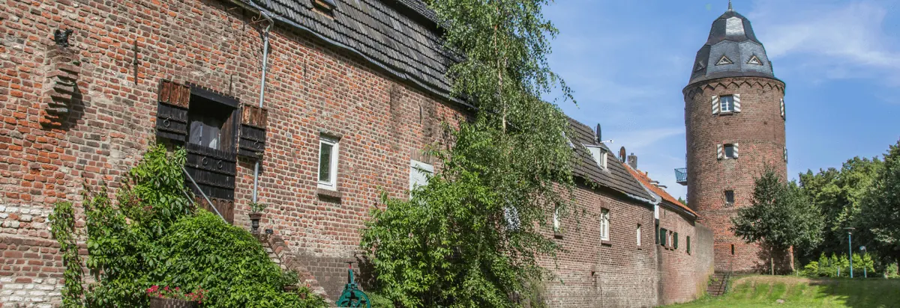
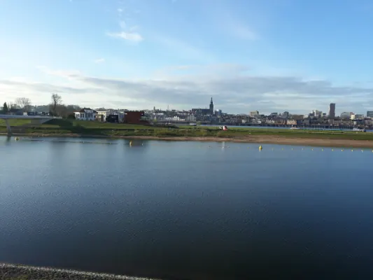

Gids
Over de grens: Kleef, Emmerik, Goch en Kranenburg
De Duitse grens ligt op tien kilometer van het centrum van Nijmegen. Kleef, met de Schwanenburg en de barokke tuinen, is in een kwartier bereikt; Kranenburg ligt nog dichterbij, Goch en Emmerik op een half uur. Veel Nijmegenaren gaan voor de supermarkten en drogisterijen, de kerstmarkten en de terrassen aan de Rijn.
In deze gids staan onze bestemmingen en artikelen over de grensstreek bij elkaar. Let op: in Duitsland zijn de winkels op zondag gesloten.
Kleef
De grootste stad net over de grens, met de Schwanenburg, de tuinen van Johan Maurits, de winkelstraten en in december de Klever Weihnachtsmarkt.

Kleef (Kleve)
Een dagje Kleef vanuit Nijmegen? Winkelen, de dierentuin, zwemmen in het Sternbuschbad, de Schwanenburg en openingstijden van winkels in Kleve.

7x Kleef net over de grens bij Nijmegen
Een dagje Kleef (Kleve) vanuit Nijmegen? Dit zijn 7 leuke tips in het stadje net over de grens, van de Schwanenburg tot gezellig winkelen.

Kerstmarkt Kleve 2026
De kerstmarkt in Kleve (Kleef) is van 27 november t/m 6 december 2026. Met openingstijden, parkeren, de bus vanuit Nijmegen en de koopzondag op 29…
Emmerik, Goch en Kranenburg
Emmerik aan de Rijn met de langste hangbrug van Duitsland, Goch met klooster Graefenthal en het grensdorp Kranenburg aan de voet van de stuwwal.
Emmerik (Emmerich am Rhein)
Emmerik, een half uur van Nijmegen: de Rijnpromenade, de langste hangbrug van Duitsland, kerken en musea, winkelen, de geschiedenis van Elten en hoe je…

Goch
Goch ligt een half uur van Nijmegen, net over de Duitse grens. Historie, fietsen naar Klooster Graefenthal, winkelen en ontspannen bij GochNess.

Kranenburg
Kranenburg ligt net over de grens tussen Nijmegen en Kleef. Ontdek de oude stadswal, Museum Katharinenhof, de molentoren en Duitse lekkernijen.
De grensstreek
De Duivelsberg was tot 1949 Duits, de Ooijpolder loopt door tot aan de grens en verder weg lonken zee en stad.

De Duivelsberg bij Berg en Dal
De Duivelsberg bij Berg en Dal: 75,9 meter hoog, bos met tamme kastanjes, pannenkoekenrestaurant op de top, wandelroutes, parkeren en waarom de heuvel…

Ooijpolder bij Nijmegen
Alles over de Ooijpolder bij Nijmegen: wandel- en fietsroutes, de Bisonbaai, de Duivelsberg, dieren, eten en drinken en waar je parkeert.

Zin in zee of stad? 3x perfecte uitstapjes buiten Nijmegen
Even de stad uit? Drie perfecte uitstapjes vanuit Nijmegen, naar zee, een bruisende stad of de natuur, voor een dag of een heel weekend.
Andere gidsen: zien en doen
Veelgestelde vragen
Hoe ver is Kleef van Nijmegen?
Ongeveer 20 kilometer, een kwartier tot twintig minuten rijden. Snelbus 58 rijdt vanaf station Nijmegen naar Kleef en door naar Emmerik.
Zijn de winkels in Kleef op zondag open?
Nee. In Duitsland zijn de winkels op zondag gesloten, op enkele koopzondagen per jaar na.
Wanneer is de kerstmarkt in Kleef?
De Klever Weihnachtsmarkt is in 2026 van 27 november tot en met 6 december. Zie onze pagina over de kerstmarkt in Kleef.
Wat is er te zien in Emmerik?
De Rijnpromenade, de Rijnbrug (de langste hangbrug van Duitsland), de Sint-Martinikerk en Sint-Aldegundiskerk, het Rheinmuseum en het PAN kunstforum.